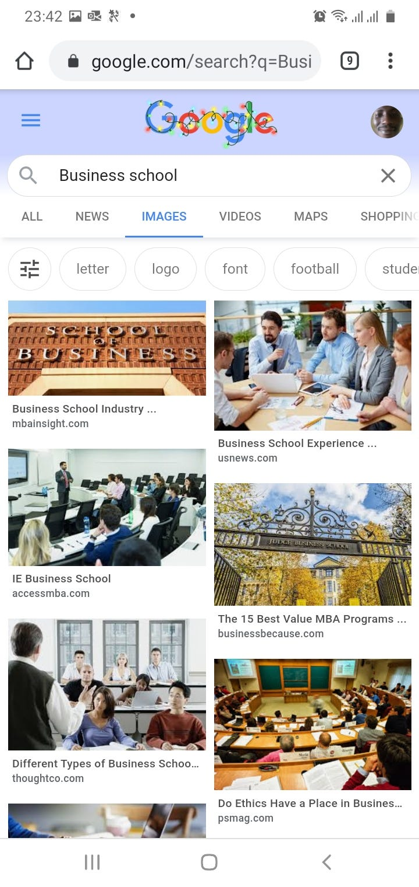

Dec 17, 2020
Blue ocean, analogy and business school
Exploting analogy is a powerful shortcut for a product designer or brand maker. The driving sentence being like This but..... The human brain works with analogy comparing things each between others to see patterns and differences. That’s what helped our grand cave parents escape from night predators and as humanity matured to sapiens, the selection theory made this functionality become the core component of our decision model. You learn from business school that differentiation is the most competitive tool for a company. It made startups like apple stands from the crowd but what they missed is that being different doesn’t mean having any links with others. If you want to be different you should first focus on highlighting all these things that you share with others then show this tiny thing that you only have then contrast will apply and your customers brain will use an analogy to make you stand out because you helped them use their analogy skill in the first place by showing them what you share with your competitors. If you do that I will be wrong to say competitors because you created your own space that you use to name a blue ocean at business school.
